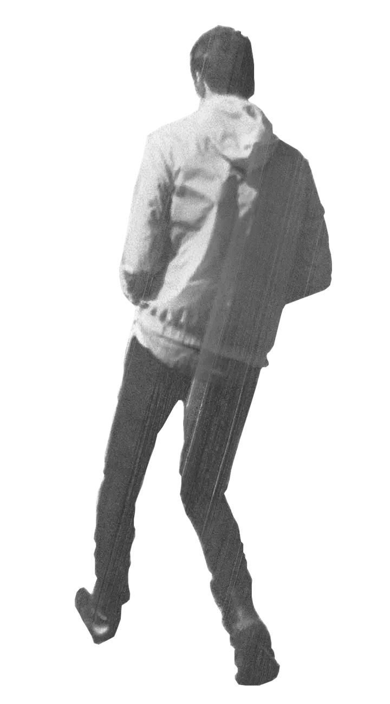
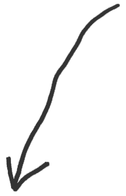

I'm a creative technologist with over a decade of experience bringing projects from concept to completion for enterprise organizations. I've spent my career building, scaling, and modernizing software across a wide range of industries.
I've seen some things!
Most of my professional experience has been in healthcare, where I've worked on systems that demand a high degree of reliability, security, and regulatory compliance. My work has included building and maintaining data pipelines, ETL workflows, and data warehousing solutions, with a strong focus on data integrity and protecting sensitive information. I've also contributed to projects in finance and e-commerce, applying full-stack development and systems architecture principles to solve complex technical challenges.
Outside of software development, I'm an artist and designer. That creative background heavily influences how I approach my work, both visually and technically. Many of my personal projects draw inspiration from print design, event flyers, and album artwork, often incorporating hand-drawn elements, scanned images, and unconventional visual treatments. I enjoy finding the intersection between functionality and personality, creating experiences that are intuitive and purposeful without feeling generic.
Whether I'm designing an interface, architecting a system, or building a product from scratch, I'm interested in work that is thoughtful and built to last.
Intro To Rhythm (I2R) is a fully independent internet radio platform. Originally launched in 2017 as a simple PHP website, it has evolved into a fully custom broadcasting platform and served as the technical foundation for multiple online radio stations.
The application includes a custom streaming infrastructure, a real-time WebSocket-based chat system, and automated scheduling software written in Python for managing pre-recorded broadcasts. The entire platform runs on a self-managed Ubuntu server and is built with Django, Vue 3, and TypeScript.
I2R showcases full-stack development across infrastructure, backend services, frontend design, real-time communication, and media streaming.
Symbiotic Pulse System (SPS) is a browser-based virtual synthesizer that recreates many of the core concepts of analog synthesis using modern web technologies. The project was developed as both an educational tool and a technical exploration of real-time audio processing in the browser.
Powered by the Web Audio API, SPS features modular synthesis components such as oscillators, amplifiers, and LFOs, all of which can be manipulated in real time. State management architecture dynamically allocates and scales synth voices, enabling responsive polyphony and complex signal routing without requiring native software or hardware.
The project demonstrates advanced client-side audio programming, state management, and interactive UI design, delivering a fully playable synthesis environment accessible from any modern browser.